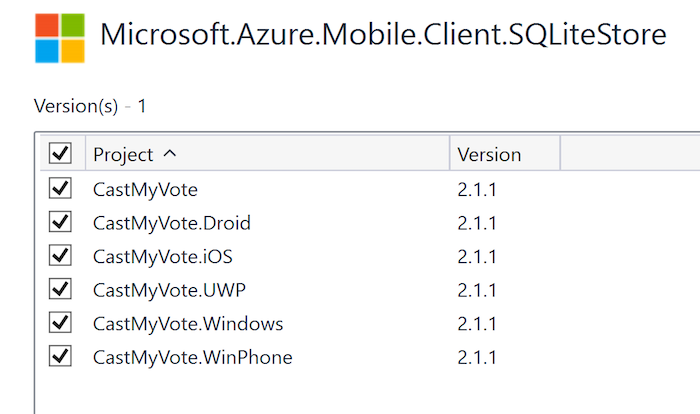

Duration
10 minutes
Goals
In this lab exercise, you will continue your modification of the CastMyVote Xamarin.Forms to add support for offline caching.
Assets
There is a completed version of the exercise in the Part 04 Resources folder. You should continue from your current work, or use the completed version in the prior lab folder as a starting point.
Challenge
There are several steps we will take for this lab. You can explore on your own to implement the functionality for your service, or use the step-by-step instructions below.
- Add the Microsoft.Azure.Mobile.Client.SQLiteStore NuGet package to all the projects.
- Create a new
MobileServiceSQLiteStoreto hold our local data. - Define our two tables in the SQLite store.
- Initialize the
MobileServiceClient.SyncContextwith the SQLite store. - Change the table definitions to use
IMobileServiceSyncTable.
Steps
Add support for offline caching
To support offline caching, we need to add a reference to another NuGet package and call an initialize method for our iOS application.
- Add a NuGet reference to the Microsoft.Azure.Mobile.Client.SQLiteStore package to each of the platform-specific (head) projects and to your PCL. 
Initialize the SQLite local cache
Next, we need to initialize our local database so the Azure client can work with a local data source instead of the remote database.
- Open your AzureSurveyService.cs service you have been working on.
-
In the
Initializemethod, create a newMobileServiceSQLiteStoreand store it in a local field in the method. -
Next, call
DefineTable<T>method on the DB store for our two DTOs.
-
Next, call the
InitializeAsyncmethod on theSyncContextproperty of yourMobileServiceClient.- Pass the created store as the first parameter.
- Pass a new instance of a
MobileServiceSyncHandlerobject as the second parameter. This class is what executes the async calls to synchronize the database - we are using the default implementation.
-
Notice that this method is asynchronous and returns a
Task. To make this easier to work with, you can modify the method to beasyncand return aTaskso errors propagate out. -
Rename the method to
InitializeAsyncso it's clear that this method is now async. You can use the Rename refactoring to ensure this change goes through the class.
- That last change ripples throughout our class since we call
InitializeAsyncfrom every method. Fixup all the methods, using theawaitkeyword on each call toInitializeAsync- you can use the marked up code below as a guide to apply the keywords into the correct place if you need some help:
public async Task AddOrUpdateSurveyResponseAsync (SurveyResponse response)
{
await InitializeAsync ();
if (string.IsNullOrEmpty(response.Id)) {
await responseTable.InsertAsync (response);
}
await responseTable.UpdateAsync (response);
}
public async Task DeleteSurveyResponseAsync (SurveyResponse response)
{
await InitializeAsync ();
await responseTable.DeleteAsync (response);
}
public async Task<IEnumerable<SurveyQuestion>> GetQuestionsAsync ()
{
await InitializeAsync ();
return await questionsTable.ReadAsync ();
}
public async Task<SurveyResponse> GetResponseForSurveyAsync (string questionId, string name)
{
await InitializeAsync ();
return (await responseTable.Where (r => r.SurveyQuestionId == questionId
&& r.Name == name)
.ToEnumerableAsync ()).FirstOrDefault ();
}
public async Task<IEnumerable<SurveyResponse>> GetResponsesForSurveyAsync (string questionId)
{
await InitializeAsync ();
return await responseTable
.OrderByDescending(r => r.UpdatedAt)
.Take(100).ToEnumerableAsync();
}
Use IMobileServiceSyncTable to query our data
The final step in switching to our local cache is to use the IMobileServiceSyncTable interface instead of our normal IMobileServiceTable.
- Change the two fields holding the questions and responses to be a
IMobileServiceSyncTable. - Change the call to
GetTableon theMobileServiceClient>to beGetSyncTable. - Run the application to see the results.
- We are now using our local cached data - except we have no data! So the screen will come up but be empty. The next step is to learn how to synchronize our data to the remote DB.
Summary
In this exercise, you added full support for locally caching data using the built-in support and broke your app! We'll fix it next.